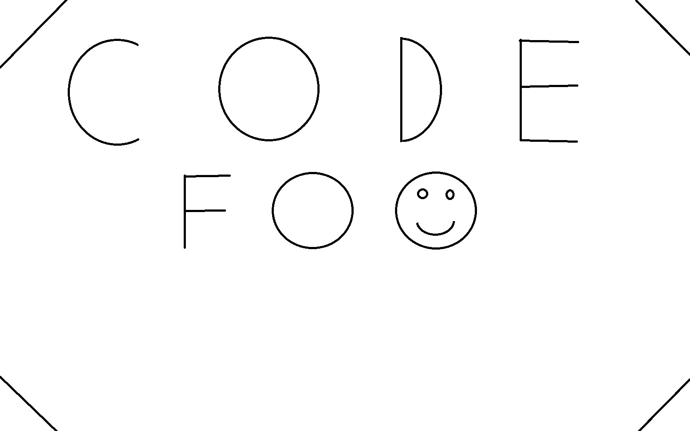

Code Foo
Question 2
Liquid layouts are useful in order to meet the resolution of any device that visits
a page. Text that is readable to a computer may be too small for a cell phone. Also, parts of the
page may not fit on the screen at different resolutions, or it could appear too wide.

This webpage does not support very small resolutions. Please try again with a wider display.